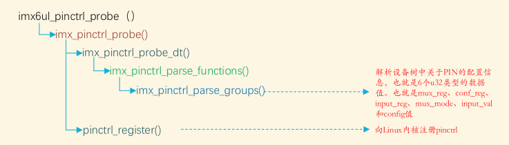

版权信息
warning
本文章为博主原创文章。遵循 CC 4.0 BY-SA 版权协议，转载请附上原文出处链接和本声明。
1. Linux 内核 Pinctrl 子系统简介
现代 SoC 中的 GPIO 引脚通常具有多功能（多路复用）属性，例如一个引脚既可以用作通用 GPIO，也可以用作某个外设（如 UART、I2C、SPI 等）的信号线。传统做法需要驱动直接访问寄存器完成引脚功能和属性配置，但这种方式繁琐且易错。为此，Linux 内核引入了 pinctrl（pin control）子系统，负责解析设备树中的引脚配置，并在系统启动时自动完成引脚的复用和电气属性设置。换言之，开发者只需在设备树中描述引脚功能和特性，pinctrl 子系统就会在后台枚举所有可控引脚、设置对应的复用模式和上下拉、驱动强度等电气特性，从而简化驱动开发过程。
综上，我们现在总结出 Pinctrl 的两大核心任务：
- 引脚复用 (Pin Muxing)： 决定某个物理引脚当前是作为普通 GPIO，还是作为 UART 的 TX 线，或者是 I2C 的 SCL 线。
- 引脚配置 (Pin Configuration)： 设置引脚的电气特性，例如：上拉/下拉电阻、驱动能力（电流大小）、防抖动等。
2. 理解 Pinctrl
理解 Pinctrl，需要掌握以下几个关键概念。我们尽量避开复杂的 C 语言结构体，从逻辑层面来理解：
2.1. 关键术语
- Pin（引脚）： 芯片上最小的物理单元。
- Group（引脚组）： 有些功能需要多个引脚配合（例如 I2C 需要 SCL 和 SDA 两根线）。我们将这两根线打包，称为一个 Group。
- Function（功能）： 这一组引脚要干什么？是做
i2c0，还是做uart1？这就是 Function。 - State（状态）： 这是应用层最常接触的概念。一个设备可能有多种状态，最常见的是：
default：设备正常工作时的引脚配置。sleep：设备休眠时，为了省电，将引脚配置为低功耗模式（如断开连接或弱下拉）。
2.2. 用于Pinctrl的设备树节点
一般来说，要使用pinctrl，在设备树里面会有一个节点专门来描述 PIN 的配置信息。
对于不同厂商，这个节点的命名是不同的，比如有些直接以“pinctrl”命名，而像imx6系列就是以“iomuxc”来命名的。
我们以 nxp 的 imx6ull 为例，来看看这个节点定义在哪里（本篇均以该SoC为例）。它这个包含关系比较抽象，这个节点的定义在
arch/arm/boot/dts/nxp/imx/imx6ul.dtsi
具体包含关系是这样的：imx6ull-14x14-evk-emmc.dts(最终使用的设备树文件) -> imx6ull-14x14-evk.dts -> imx6ull.dtsi -> imx6ul.dtsi
那么在 imx6ul.dtsi 文件中具体代码是这样写的：
soc: soc{
...
iomuxc: pinctrl@20e0000 {
compatible = "fsl,imx6ul-iomuxc";
reg = <0x020e0000 0x4000>;
};
...
}我们向这个节点添加我们想要的配置，pinctrl 系统就能自动配置引脚属性，我们这个SoC就在 arch/arm/boot/dts/nxp/imx/imx6ul-14x14-evk.dtsi 这个文件里面添加了许多引脚配置信息：
...
&iomuxc {
pinctrl-names = "default";
pinctrl_camera_clock: cameraclockgrp {
fsl,pins = <
MX6UL_PAD_CSI_MCLK__CSI_MCLK 0x1b088
>;
};
pinctrl_csi1: csi1grp {
fsl,pins = <
MX6UL_PAD_CSI_PIXCLK__CSI_PIXCLK 0x1b088
MX6UL_PAD_CSI_VSYNC__CSI_VSYNC 0x1b088
MX6UL_PAD_CSI_HSYNC__CSI_HSYNC 0x1b088
MX6UL_PAD_CSI_DATA00__CSI_DATA02 0x1b088
MX6UL_PAD_CSI_DATA01__CSI_DATA03 0x1b088
MX6UL_PAD_CSI_DATA02__CSI_DATA04 0x1b088
MX6UL_PAD_CSI_DATA03__CSI_DATA05 0x1b088
MX6UL_PAD_CSI_DATA04__CSI_DATA06 0x1b088
MX6UL_PAD_CSI_DATA05__CSI_DATA07 0x1b088
MX6UL_PAD_CSI_DATA06__CSI_DATA08 0x1b088
MX6UL_PAD_CSI_DATA07__CSI_DATA09 0x1b088
>;
};
...
};
...2.3. Pinctrl 的实现
2.3.1. Pinctrl Provider（服务端）
通常由芯片厂商（如瑞芯微、恩智浦、高通）编写的驱动。它知道芯片底层每一个寄存器怎么写，知道“引脚A”怎么切换成“功能B”。我们通常不需要写这部分代码，只需使用。
这部分就相当于 pinctrl 的驱动程序，本质就是使用of函数搜索设备节点，找到用于pinctrl的设备节点，并根据该节点里的子节点信息来配置寄存器，具体的实现我们就不去深究了，附一张调用链图，来自正点原子：

2.3.2. Pinctrl Consumer（客户端）
这是我们需要关心的部分。具体的设备驱动（如 UART 驱动、LED 驱动）就是客户端。它们向 Pinctrl 子系统发出申请：“我要用这组引脚，帮我切到 UART 模式。”
2.3.3. 总结
从原理上看，pinctrl 子系统分为核心层（core） 和 控制器驱动层（provider） 、客户端层（consumer）。
内核启动时，pinctrl core 会扫描设备树，收集所有 pin 控制器节点和它们定义的引脚组。
各 SoC 厂商提供的 pinctrl 驱动（位于 drivers/pinctrl/ 目录）负责与具体硬件交互。在驱动 probe 阶段，pin 控制器驱动会根据设备树提供的组配置向硬件寄存器写入正确的复用模式和引脚参数。这样，无论是 GPIO、UART、SPI 等功能，只要设备树指定了 pinctrl 组和状态，内核都会在初始化时调用对应驱动完成配置。
用户态程序或驱动只需通过抽象好的接口申请和切换状态，而不必关心寄存器细节。
总体上，pinctrl 子系统实现了“设备树描述 → pin 配置 → 驱动使用”这一流程的统一化管理，让引脚配置从驱动代码中解耦，提升了代码可移植性和可维护性。
2.4. Pinctrl 的工作流程
Pinctrl 子系统在内核中起到了“中间人”的作用，它屏蔽了底层硬件的复杂性。
流程如下：
- 系统启动：Linux 内核解析设备树（DTS）。
- 设备加载：当一个设备驱动（比如 I2C 驱动）加载时，内核会检查该设备在设备树中关联的 Pinctrl 信息。
- 自动申请：在驱动的
probe阶段，驱动核心（Driver Core）会自动向 Pinctrl 核心申请将该设备的引脚切换到default状态。 - 底层执行：Pinctrl 核心找到对应的Pinctrl驱动（Provider），写入寄存器，完成复用和电气配置。 这就意味着，作为驱动开发者，你甚至不需要在 C 代码里写一行关于配置引脚的代码，一切都已经在设备树加载时自动完成了。
3. 使用 Pinctrl （以IMX6ULL为例）
3.1. step0.查阅编写说明书
要使用 Pinctrl ，必不可少的就是我们在前面介绍设备树一文中提到的编写规范文档，必须按照编写规范来写！ 对于本文使用的SoC来说，这个文档就是 Documentation/devicetree/bindings/pinctrl/fsl,imx6ul-pinctrl.txt
原文是这样描述的：
* Freescale i.MX6 UltraLite IOMUX Controller
Please refer to fsl,imx-pinctrl.txt in this directory for common binding part
and usage.
Required properties:
- compatible: "fsl,imx6ul-iomuxc" for main IOMUX controller or
"fsl,imx6ull-iomuxc-snvs" for i.MX 6ULL's SNVS IOMUX controller.
- fsl,pins: each entry consists of 6 integers and represents the mux and config
setting for one pin. The first 5 integers <mux_reg conf_reg input_reg mux_val
input_val> are specified using a PIN_FUNC_ID macro, which can be found in
imx6ul-pinfunc.h under device tree source folder. The last integer CONFIG is
the pad setting value like pull-up on this pin. Please refer to i.MX6 UltraLite
Reference Manual for detailed CONFIG settings.
翻译如下：
* Freescale i.MX6 UltraLite IOMUX 控制器
本目录中的 fsl,imx-pinctrl.txt 文件提供了通用绑定部分及使用说明，请参考该文档。
必需属性：
- compatible：
主 IOMUX 控制器应使用 "fsl,imx6ul-iomuxc"，
i.MX6ULL 的 SNVS IOMUX 控制器则使用 "fsl,imx6ull-iomuxc-snvs"
- fsl,pins：
每个条目由6个整数组成，代表单个引脚的多路复用和配置设置。
前5个整数 <mux_reg conf_reg input_reg mux_val input_val>
使用 PIN_FUNC_ID 宏定义（该宏定义位于设备树源文件夹下的 imx6ul-pinfunc.h 文件中），
最后一个整数 CONFIG 为焊盘配置值（例如该引脚的上拉设置）。
详细 CONFIG 设置请参阅 i.MX6 UltraLite 参考手册。意思是你要在pinctrl节点下添加你的pin配置，你必须有两个属性：
- compatible：这是主控制器也就是IOMUXC节点所需属性，子节点无需指定。
- 如果使用主 IOMUX 控制器，值必须为“fsl,imx6ul-iomuxc”。
- 如果使用 SNVS IOMUX 控制器，值必须为“fsl,imx6ull-iomuxc-snvs”
- fsl,pins：子节点必需属性。 由6个寄存器值组成，前5个值已被官方包装为宏定义，最后一个寄存器值需要我们手动设置。
它还提到这个宏定义就在 imx6ul-pinfunc.h，我们截取一段看看，就拿一个GPIO的配置来看一下吧：
#define MX6UL_PAD_GPIO1_IO04__GPIO1_IO04 0x006c 0x02f8 0x0000 5 0这五个数是这样组织的:
| 名字 | mux_reg | conf_reg | input_reg | mux_val | input_val |
|---|---|---|---|---|---|
| 值 | 0x006c | 0x02f8 | 0 | 5 | 0 |
| 意义 | 引脚复用寄存器相对偏移地址 | 引脚配置寄存器相对偏移地址 | 输入选择控制寄存器偏移地址 | 引脚复用寄存器值 | 输入选择控制寄存器值 |
备注：
- 相对 主io控制器 iomuxc 的地址 0x020e0000 偏移。
- 输入选择寄存器为0，为无效值，表示这个配置不需要输入选择。
- 什么时候需要输入选择寄存器呢？假设芯片内部有一个 UART1_RX（串口1接收）信号。根据芯片设计，这个 UART1_RX 信号可能可以从 GPIO1_IO01 这个引脚输入，也可以从 GPIO1_IO02 这个引脚输入。这两个引脚都具备复用为 UART1_RX 的能力。这个寄存器的作用就是指定输入路径。
- 写入寄存器的这些值是厂商帮我们写好了的，填入这些值到相应的寄存器，引脚就能复用为我们想要的功能。我们再也不需要去找寄存器、看位定义了！
- 擅长找规律的同学肯定注意到了，第六个值，也就是自己配置的值其实就是 conf_val。
不同的厂商有不同的编写方式，但通过阅读厂商为我们写好的编写文档，我们就可以很快速的跟上厂商的节奏。
3.2. step1.在 Pinctrl 节点中定义引脚配置
首先，在 SoC 厂商提供的 pinctrl 节点下，定义你需要的引脚组。
&iomuxc {
pinctrl_i2c1: i2c1grp {
fsl,pins = <
MX6UL_PAD_UART4_TX_DATA__I2C1_SCL 0x4001b8b0
MX6UL_PAD_UART4_RX_DATA__I2C1_SDA 0x4001b8b0
>;
};
};不同厂商的语法（如 rockchip,pins 或 fsl,pins）略有不同，但逻辑一致。
3.3. step2.在设备节点中引用 Pinctrl
接下来，在你具体的设备节点中，告诉内核：“我要用上面定义的那些引脚”。
&i2c1 {
status = "okay";
/* 1. 指定引脚配置名称列表 */
pinctrl-names = "default";
/* 2. 引用步骤一中定义的句柄 */
pinctrl-0 = <&pinctrl_i2c1>;
};代码解读：
pinctrl-names = "default"：告诉内核，这组配置叫 “default”。内核加载驱动时，会自动查找并激活名为 “default” 的配置。pinctrl-0 = <&pinctrl_i2c1>;：这对应着 “default” 状态下具体的硬件引脚设置。
3.4. 进阶：多状态切换（休眠模式）
如果你的设备支持电源管理，你可以定义两个状态：
&some_device {
pinctrl-names = "default", "sleep"; /* 定义了两个名字 */
pinctrl-0 = <&pin_conf_active>; /* default 对应这组 */
pinctrl-1 = <&pin_conf_sleep>; /* sleep 对应这组 */
};当设备驱动调用 pinctrl_pm_select_sleep_state() 时，引脚会自动切换到 pinctrl-1 指定的配置（例如关闭上拉电阻以省电）。
4. 总结
Linux Pinctrl 子系统虽然底层复杂，但对应用和驱动开发者的接口非常友好。
- 核心作用： 管理引脚复用（Mux）和电气配置（Config）。
- 工作方式： 基于设备树（DTS）描述，内核自动在驱动加载时应用。
- 你的任务： 作为开发者，你主要的工作是查阅芯片手册，确定引脚功能，然后在设备树中正确填写
pinctrl-names和pinctrl-0。